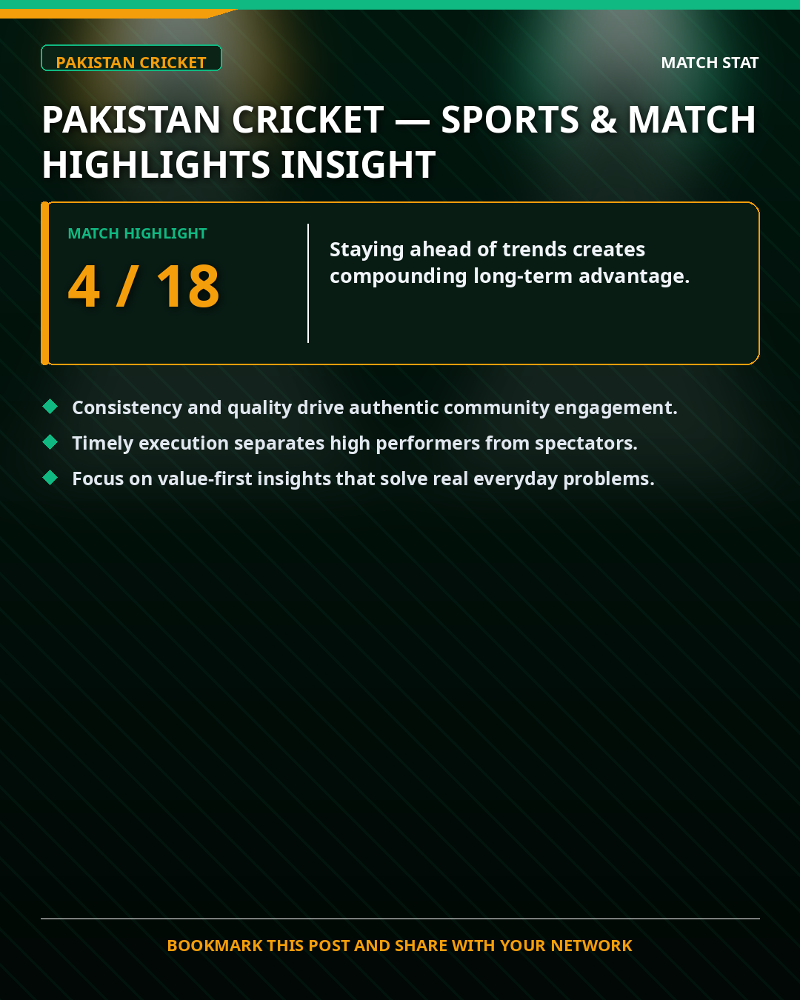
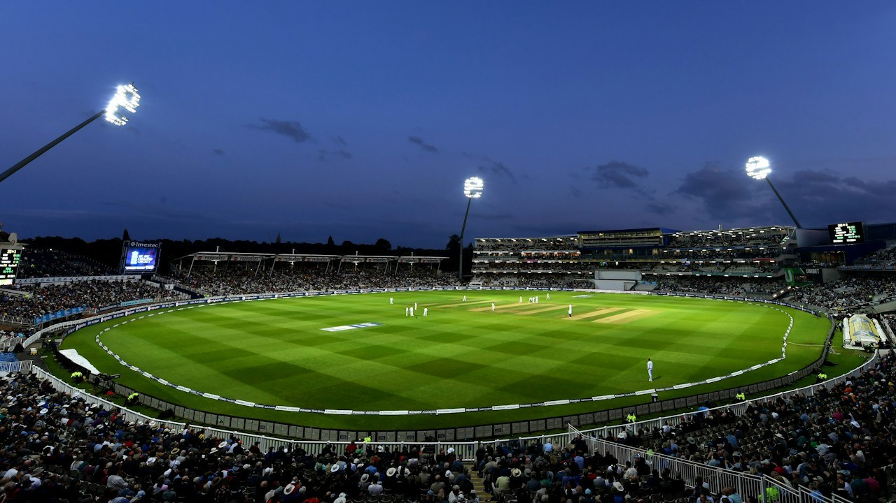
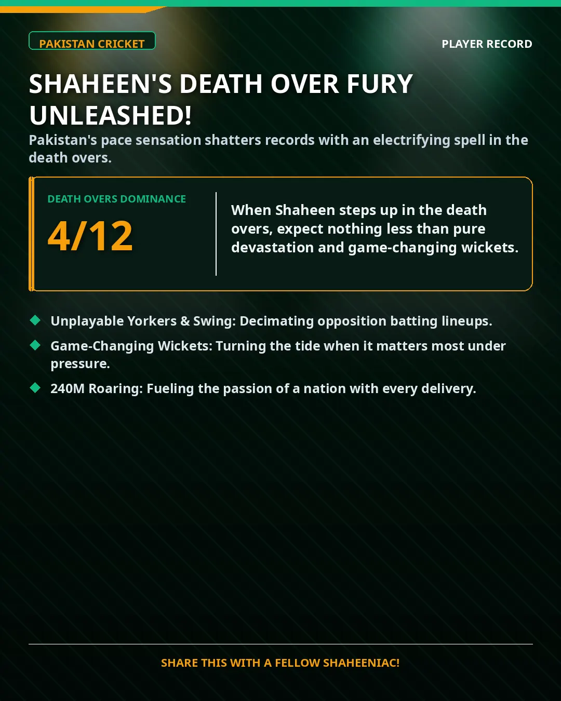
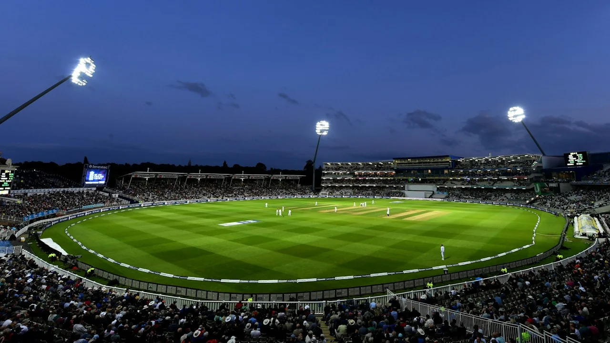
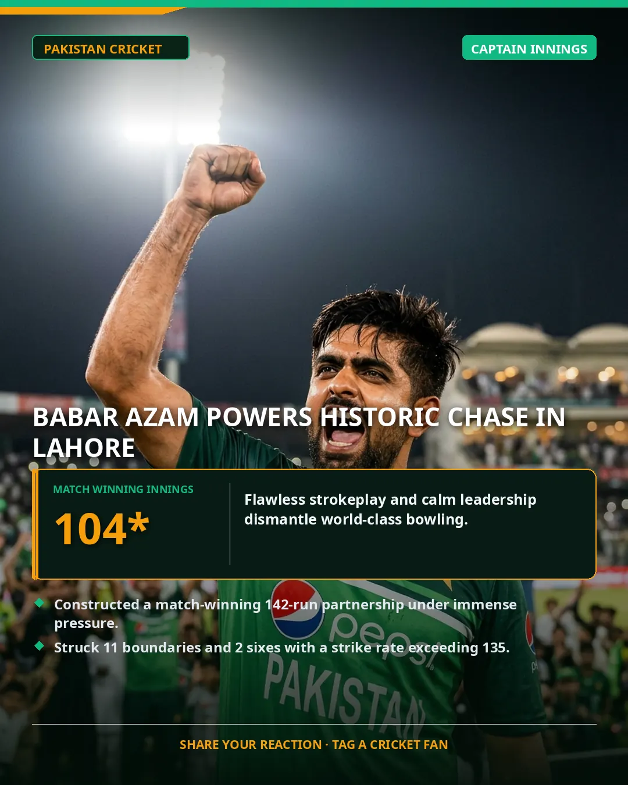

PAKISTAN CRICKET 🏏
PAKISTAN CRICKET 🏏
Pakistan Cricket — Sports & Match Highlights Insight
Latest match analysis and tactical developments.

Pakistan Cricket — Sports & Match Highlights Insight
Latest match analysis and tactical developments.

Shaheen Shah Afridi’s MCG Masterclass: How Left-Arm Seam Dismantled Australia
Bowling with ferocious late swing at 148 kph, Shaheen delivered a death-overs clinic that left Australia’s top order stunned in Melbourne.
Inside Babar Azam’s Technique: The Cover Drive That Defies Modern Field Placements
A forensic biomechanical breakdown of Pakistan’s anchor, head balance through the crease, and why pace bowlers struggle to pin him down.
Executive Intelligence & Field Reports
8 Dossiers Available SPEED RADAR
SPEED RADAR
The 150+ KPH Club: Why Pakistan’s Fast Bowlers Remain World Cricket’s Most Lethal Asset
From Rawalpindi tape-ball tape tournaments to modern biometric academies, the science of raw pace in Pakistan cricket.

STRATEGYThe Champions Trophy Blueprint: Middle-Overs Spin Choke & Death Execution
Data modeling suggests teams maintaining under 4.8 RPO between overs 11 and 40 hold an 82% win rate on subcontinental pitches.

ANALYTICSThe Death-Overs Anatomy: Why the Wide Yorker Is Replacing the Blockhole Yorker
Tracking boundary percentages against modern power hitters and why lateral angles matter more than pure straight pace.

STADIUM REPORTThe New Gaddafi Stadium: How LED Ring Floods & Pitch Relay Transformed Lahore
A world-class modernization with upgraded turf drainage and drop-in soil technology ready for international marquee clashes.